Small trees, up to 10 m tall.
10 ಮೀ. ಎತ್ತರದವರೆಗೆ ಬೆಳೆಯುವ ಸಣ್ಣ ಗಾತ್ರದ ಮರಗಳು.
10 മീറ്റര് വരെ ഉയരത്തില് വളരുന്ന ചെറുമരങ്ങള്.
சிறிய மரம் 10 மீ. உயரம் வரை வளரக்கூடியது.
Bark brown, tubercled; blaze light orange yellow.
ತೊಗಟೆ ಕಂದು ಬಣ್ಣದಲ್ಲಿದ್ದು ಗುಬುಟುಗಳ ಸಮೇತವಿರುತ್ತದೆ; ಕಚ್ಚು ಮಾಡಿದ ಜಾಗ ಕಿತ್ತಳೆ ಹಳದಿ ಬಣ್ಣದಲ್ಲಿರುತ್ತದೆ.
മുഴപ്പുകളോട് കൂടിയ തവിട്ട്നിറത്തിലുളള പുറംതൊലി; വെട്ട്പാടിന് ഓറഞ്ച് - മഞ്ഞനിറം.
மரத்தின் பட்டை அரக்கு நிறமுடையது, கழலைகள் காணப்படும், உள்பட்டை வெளிறிய ஆரஞ்சு கலந்த மஞ்சள் நிறமுடையது.
Branchlets terete with short internodes; terminal young branchlets densely fulvous hirsute.
ಕಿರುಕೊಂಬೆಗಳು ದುಂಡಾಗಿದ್ದು ಕಿರಿದಾದ ಅಂತರ-ಗಿಣ್ಣುಗಳ ಸಮೇತವಿರುತ್ತವೆ; ತುದಿಯಲ್ಲಿನ ಎಳೆಯ ಕಿರುಕೊಂಬೆಗಳು ದಟ್ಟವಾದ ನಸುಗೆಂಪಿನಿಂದ ಕೂಡಿದ ಹಳದಿ ಬಣ್ಣದ ದಟ್ಟವಾದ ಒರಟು ರೋಮಗಳಿಂದ ಕೂಡಿರುತ್ತವೆ.
കുറിയ പര്വ്വങ്ങളുളള, ഉരുണ്ട, ഉപശാഖകള്; അറ്റത്തുളള ഇളംശാഖകള്, കനത്തില് ഫള്വസ് രോമിലമാണ്.
சிறிய நுனிக்கிளைகள் குறுக்குவெட்டுத் தோற்றத்தில் வளையமானது, மற்றும் கணு இடைவெளி சிறியது; சிறுநுனிக்கிளைகளில் அடர்த்தியான மென்உரோமங்களுடையது.
Leaves simple, alternate, distichous; petiole to 0.5 cm long, terete, rufous hairy when young; lamina 2.2-8 x 1-2.5 cm, narrow elliptic, apex bluntly acute to obtuse, base acute, margin thick and distinctly undulate, coriaceous, hairy when young, otherwise glabrous above; secondary_nerves ca. 7 pairs, branched; tertiary_nerves distinctly reticulate.
ಎಲೆಗಳು ಸರಳವಾಗಿದ್ದು ಪರ್ಯಾಯ ಹಾಗೂ ಸುತ್ತು ಜೋಡನಾ ವ್ಯವಸ್ಥೆಯಲ್ಲಿದ್ದು ಕಾಂಡದ ಎರಡೂ ಕಡೆಯ ಎದುರು ಬದರಿನ ಸಾಲಿನಲ್ಲಿರುತ್ತವೆ; ಎಲೆ ತೊಟ್ಟುಗಳು 0.5 ಸೆಂ.ಮೀ. ಉದ್ದವಿದ್ದು, ದುಂಡಾಗಿದ್ದು, ಎಳೆಯದಾಗಿದ್ದಾಗ ಕೆಂಗಂದು ಬಣ್ಣದ ರೋಮಗಳನ್ನು ಹೊಂದಿರುತ್ತವೆ. ಪತ್ರಗಳು 2.2 - 8 X 1 -2.5 ಸೆಂ.ಮೀ. ಗಾತ್ರ ಹೊಂದಿದ್ದು ಸಂಕುಚಿತ ಅಂಡವೃತ್ತಾಕಾರದಲ್ಲಿದ್ದು ಮೊಂಡು ಅಗ್ರವುಳ್ಳ ಚೂಪಾದುದರಿಂದ ಹಿಡಿದು ಚೂಪಲ್ಲದ ತುದಿ, ಚೂಪಾದ ಬುಡ, ದಪ್ಪವಾದ ಮತ್ತು ಪ್ರಮುಖವಾಗಿ ತರಂಗಿತವಾದ ಅಂಚು ಹಾಗೂ ತೊಗಲನ್ನೋಲುವ ಮೇಲ್ಮೈ ಹೊಂದಿರುತ್ತವೆ; ಪತ್ರಗಳು ಎಳೆಯದಾಗಿದ್ದಾಗ ರೋಮಸಹಿತವಾಗಿರುತ್ತವೆ ಉಳಿದ ಸಂಧರ್ಭಗಳಲ್ಲಿ ರೋಮರಹಿತವಾಗಿರುತ್ತವೆ ;ಎರಡನೇ ದರ್ಜೆಯ ನಾಳಗಳು ಅಂದಾಜು 7 ಜೋಡಿಗಳಿದ್ದು ಕವಲುಗಳನ್ನು ಹೊಂದಿರುತ್ತವೆ;ಮೂರನೇ ದರ್ಜೆಯ ನಾಳಗಳು ಪ್ರಮುಖವಾಗಿ ಜಾಲಬಂಧನಾಳ ವಿನ್ಯಾಸದಲ್ಲಿರುತ್ತವೆ.
ലഘുവായ ഇലകള്, ഏകാന്തരമായി, തണ്ടിന്റെ ഇരുഭാഗത്ത് മാത്രമായിട്ടടുക്കിയിരിക്കുന്നു; ഇളതായിരിക്കുമ്പോള്, റൂഫസ് രോമിലമായ, ഉരുണ്ട ഇലഞെട്ടിന് 0.5 സെ.മീ വരെ നീളം; പത്രഫലകത്തിന് 2.2 സെ.മീ മുതല് 8 സെ.മീ വരെ നീളവും 1 സെ.മീ മുതല് 2.5 സെ.മീ വരെ വീതിയും, വീതികുറഞ്ഞ ദീര്ഘവൃത്താകാരവുമാണ്, പത്രാഗ്രം മുനപ്പില്ലാത്ത നിശിതാഗ്രം മുതല് ഉപകോണാകാരം വരെയാകാം, പത്രാധാരം നിശിതമാണ്, അരികുകള് കട്ടിയേറിയതും കൃത്യമായി തരംഗിതവുമാണ്, ചര്മ്മില പ്രകൃതം, ഇളതായിരിക്കുമ്പോള് രോമിലമാണ്, അല്ലാത്തപ്പോള് മുകളില് അരോമിലവും; ശാഖിതമായ ഏതാണ് 7 ജോഡി ദ്വിതീയ ഞരമ്പുകള്; ത്രിതീയ ഞരമ്പുകള് വ്യക്തമായും ജാലിതമാണ്.
இலைகள் தனித்தவை, மாற்றுஅடுக்கமானவை, இருநெடுக்கு வரிசையிலையடுக்கம் (டைஸ்டிக்கஸ்); இலைக்காம்பு 0.5 செ.மீ. வரை நீளமானது, வளையமானது, இளங்காம்பு உரோமங்களுடையது; இலை அலகு 2.2-8 X 1-2.5 செ.மீ., குறுகிய நீள்வட்டம், அலகின் நுனி மழுங்கி வால் போன்று நீண்டது, அலகின் தளம் கூரியது, அலகின் விளிம்பு தடித்தது மற்றும் அலை போன்ற விளிம்புகளுடையது, கோரியேசியஸ், புதிய இலைகளில் உரோமங்கள் காணப்படும் மற்றும் முதிர்ந்த இலைகள் உரோமங்களற்றது; இரண்டாம் நிலை நரம்புகள் தோராயமாக 7 ஜோடிகள், கிளைத்தது; மூன்றாம் நிலை நரம்புகள் அகன்ற வலைப்பின்னல் அமைப்பு கொண்டது.
Flowers dioecious; male flowers 3 in axillary clusters; female flowers solitary, axillary, corolla white.
ಗಂಡು ಮತ್ತು ಹೆಣ್ಣು ಹೂಗಳು ಪ್ರತ್ಯೇಕ ಸಸ್ಯಗಳಲ್ಲಿರುತ್ತವೆ; ಗಂಡು ಹೂಗಳು ಅಕ್ಷಾಕಂಕುಳಿನಲ್ಲಿನ ಗುಚ್ಛದಲ್ಲಿರುತ್ತವೆ; ಒಂದು ಗುಚ್ಛದಲ್ಲಿ 3 ಹೂಗಳಿರುತ್ತವೆ; ಹೆಣ್ಣು ಹೂಗಳು ಅಕ್ಷಾಕಂಕುಳಿನಲ್ಲಿ ಒಂಟಿಯಾಗಿರುತ್ತವೆ, ಪುಷ್ಪದಳಗಳು ಬಿಳಿ ಬಣ್ಣದಲ್ಲಿರುತ್ತದೆ.
പൂക്കള് ഡയീഷ്യസ് ആണ്; ആണ്പൂക്കള് 3 വീതമുളള കക്ഷീയകൂട്ടമായുണ്ടാകുന്നു; പെണ്പൂക്കള്, കക്ഷങ്ങളില് ഒറ്റക്കായുണ്ടാകുന്നു, ദളപുടം വെളുത്തതാണ്.
ஓர்பால் மலர்கள்; ஆண்மலர்கள் மூன்று மலர்களுடைய கொத்தாக இலைக்கோணங்களில் காணப்படும்; பெண்மலர்கள் தனித்தவை, இலைக்கோணங்களில் காணப்படும், மலர் வெண்நிறமுடையது.
Berry, ellipsoid, to 1 cm long; fruiting_calyx_lobes 3, slightly enlarged; 1-3 seeded.
ಬೆರ್ರಿಗಳು ಅಂಡವೃತ್ತಾಕಾರದಲ್ಲಿದ್ದು 1 ಸೆಂ.ಮೀ. ಉದ್ದವಿರುತ್ತವೆ; ಕಾಯಿಗಳ ಪುಷ್ಪಪಾತ್ರೆಗಳ ದಳಗಳು 3 ಇದ್ದು, ಸ್ವಲ್ಪಮಟ್ಟಿಗೆ ವಿಸ್ತಾರಗೊಂಡಿರುತ್ತವೆ ಹಾಗೂ 1 ರಿಒಂದ 3 ಬೀಜಗಳನ್ನೊಳಗೊಂಡಿರುತ್ತವೆ.
1 മുതല് 3 വരെ വിത്തുകള് ഉള്ള കായ 1 സെ.മീ വരെ നീളമുളള, ദീര്ഘഗോളാകാര ബെറിയാണ്; കായിലൊട്ടി നില്ക്കുന്ന ബാഹ്യദളം 3 ഭാഗങ്ങളുളളതും, ഒരല്പ്പം വികസിച്ചതുമാണ്.
முழுச்சதைகனி (பெர்ரி), நீள்வட்டம், 1 செ.மீ. வரை நீளமானது; புல்லி இதழ்கள் மூன்று கொண்டது, 1-3 விதைகளையுடையது.
 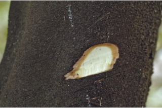
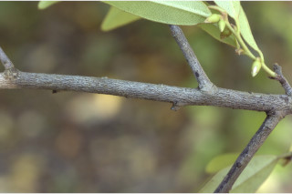
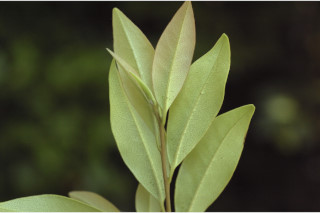
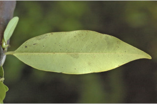
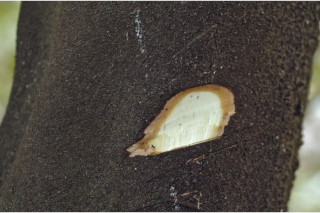
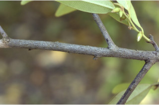
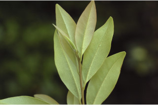
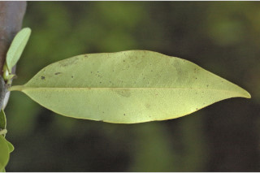
 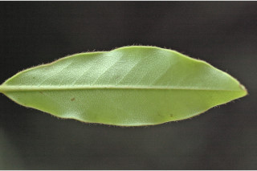
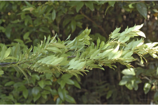
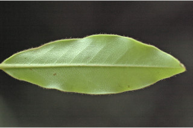
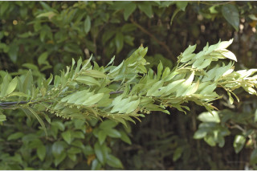
 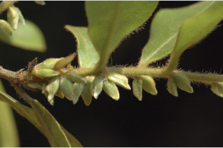
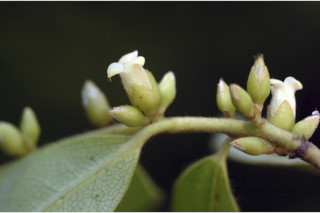
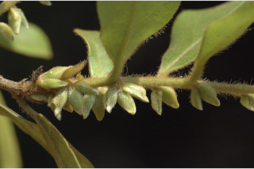
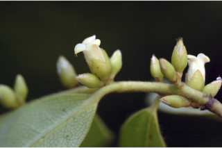
 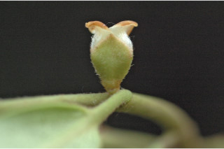
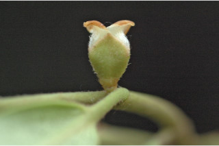